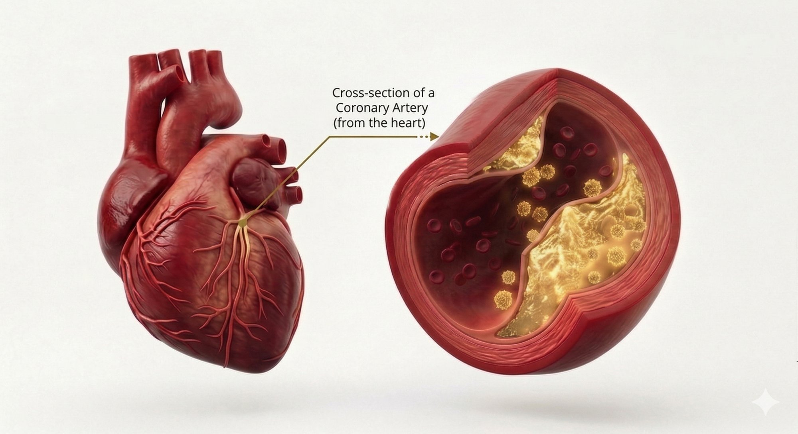

Postdoctoral Fellow in Cardiovascular Immunology
PhD researcher focused on deciphering immune mechanisms in atherosclerosis and vascular inflammation. Currently advancing translational research at Johns Hopkins School of Medicine.

Indian Institute of Technology Kharagpur, India
2017 – 2024
Thesis: Deciphering the Role of Non-Invariant Natural Killer T Cells in Atherosclerosis
University of Hyderabad, India
2016
Thesis: Functional Characterization of miR-34c and miR-146a binding sites in mouse Notch1 3' UTR
Midnapore College, Vidyasagar University, West Bengal, India
2014
2024 – Present
Flow cytometry (BD LSR Fortessa, CytoFLEX SRT), RT-PCR, Gene cloning, Immunohistochemistry
Cell line handling, Animal models, Tissue isolation, Cell processing
Meta-analysis using STATA, Statistical modeling, Data interpretation
English, Bengali, Hindi (Native and/or bilingual proficiency)
European Atherosclerosis Society (EAS) — 2022
All India Rank – 626 — 2017–2022
All India Rank – 75 — December 2016
2015
I'm interested in collaborations and discussions about cardiovascular immunology and atherosclerosis research.